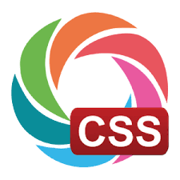
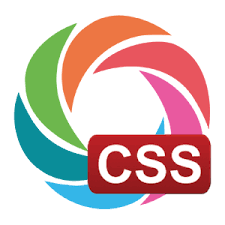

Orice pagina Web incepe cu o baza si anume pagina statica.Aceasta se construieste cu ajutorul Limbajului de marcaj HTML urmand mai apoi sa il stilizam folosin CSS.


Cativa indici care tin in ceamai mare parte de Tehnologii Web ar fi:
Stim ca tehnologiile web se bazeaza pe modelul client/server.Deasemenea clientul de cele mai multe ori este un browser.
Vom vedea incontinuare cateva exemple de browsere
Voua care va place
Orice pagina Web incepe cu o baza si anume pagina statica.Aceasta se construieste cu ajutorul Limbajului de marcaj HTML urmand mai apoi sa il stilizam folosin CSS.
